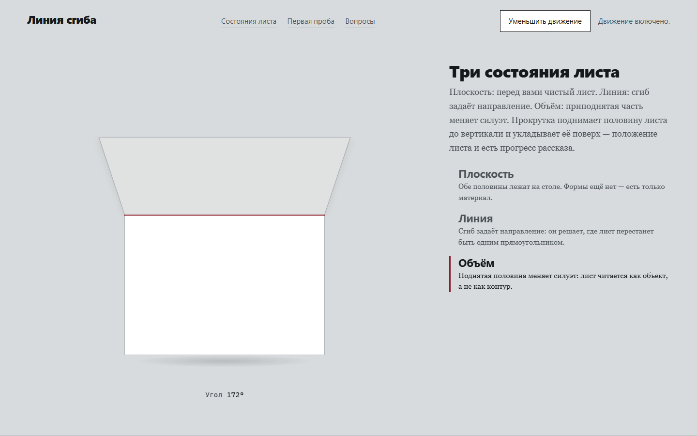
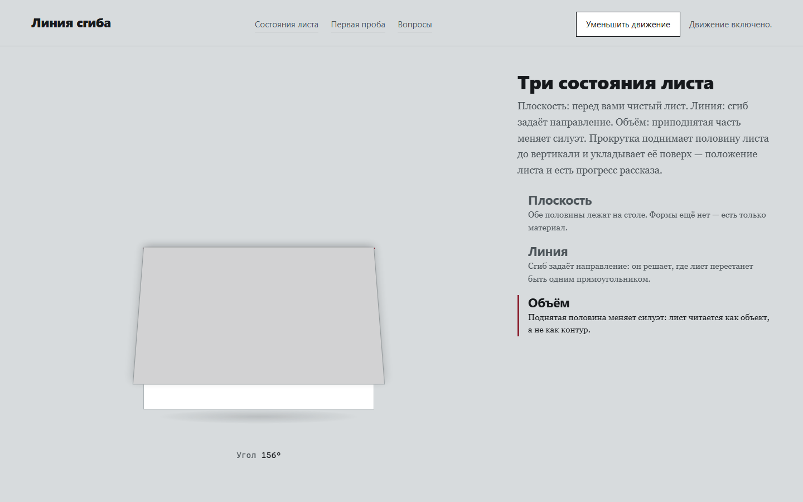
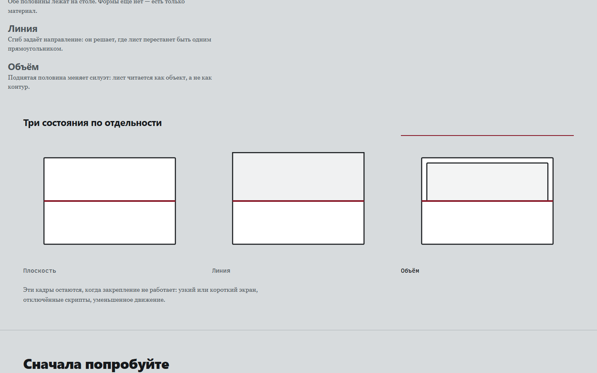
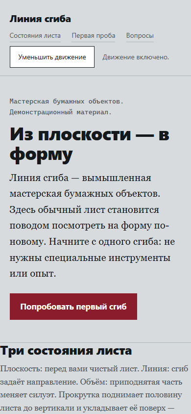
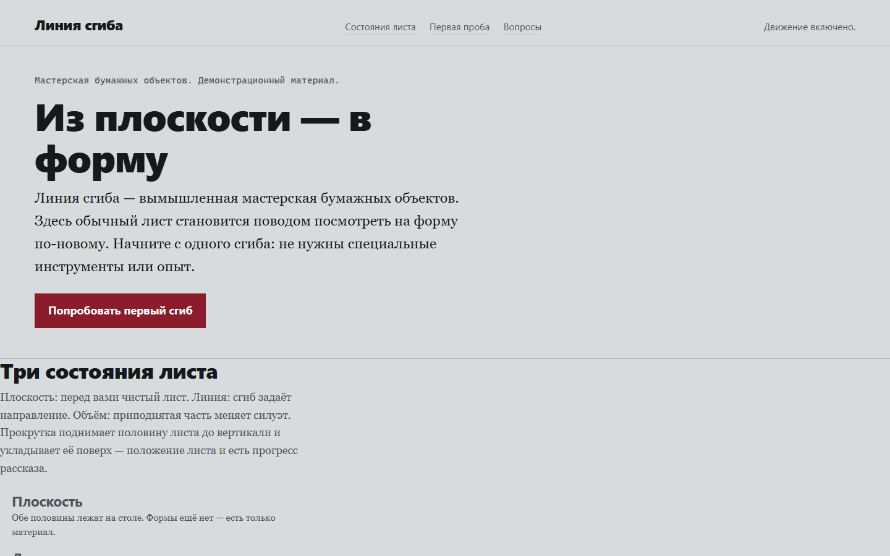
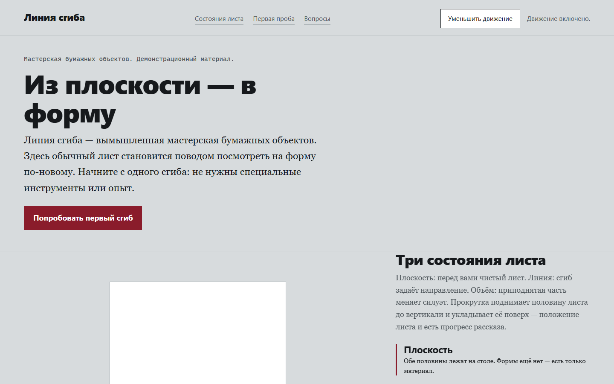

Снимки, снятые проверками arm B (fold-profile)

01-scene-end — конец сцены: лист сложен до вертикали, 1440×900
 08-scene-start — начало сцены: лист лежит плоско
08-scene-start — начало сцены: лист лежит плоско

02-short-screen — 1440×400: сцена не помещается, показаны кадры
 03-reduced-frames — ручное уменьшение движения из середины сцены
03-reduced-frames — ручное уменьшение движения из середины сцены

04-reduced-system — системное уменьшение движения

07-frames-390 — 390×844: кадры столбиком

05-no-js — без скриптов: рассказ и кадры читаются

06-export-1440 — собранный экспорт, открытый файлом